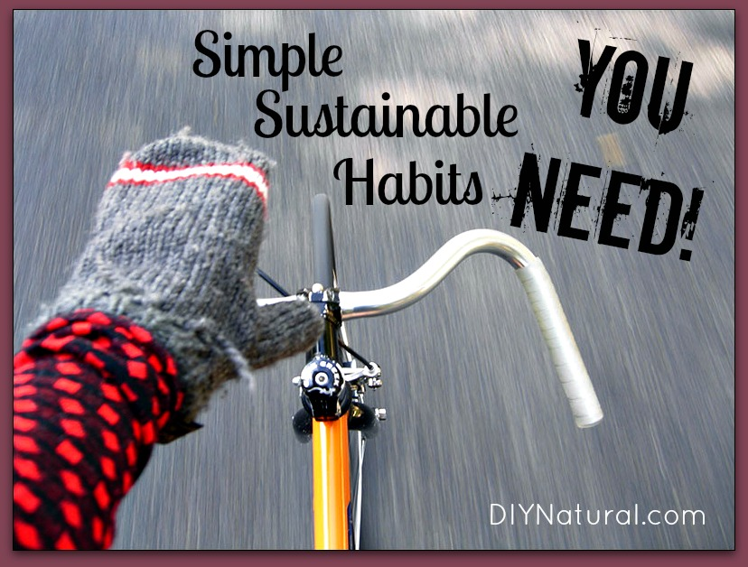

45 Simple Sustainable Habits You Need To Adopt
If everyone in the US alone followed the following tips, we’d save billions just in energy costs. Habits you adopt now will show up as savings in your pocket. Here’s how ...

What is Sustainable Living?
Sustainable living is the practice of reducing your demand on natural resources by making sure that you replace what you use to the best of your ability. Sometimes that can mean not choosing to consume a product that is made using practices that don’t promote sustainability ...